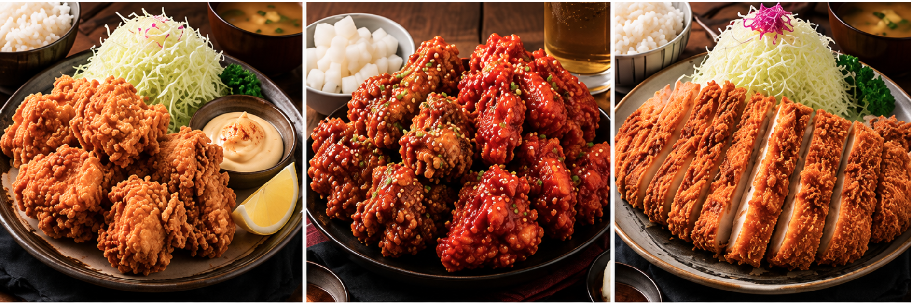
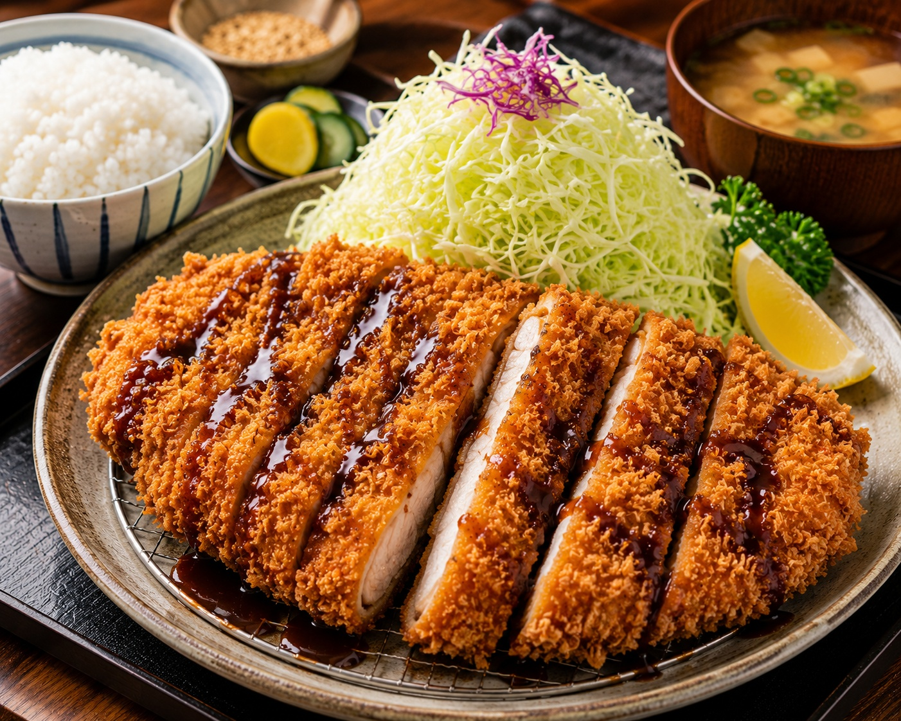
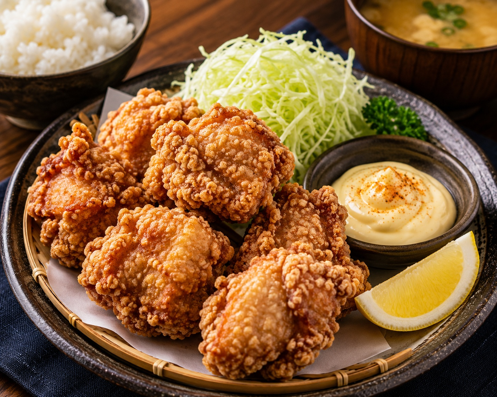
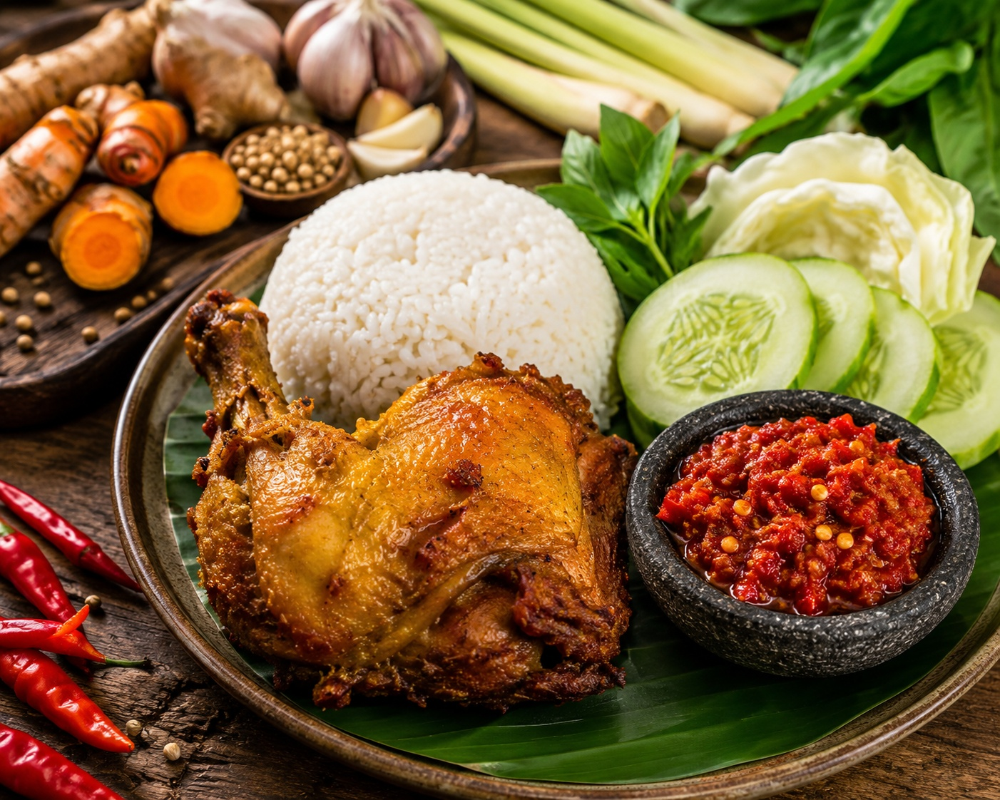
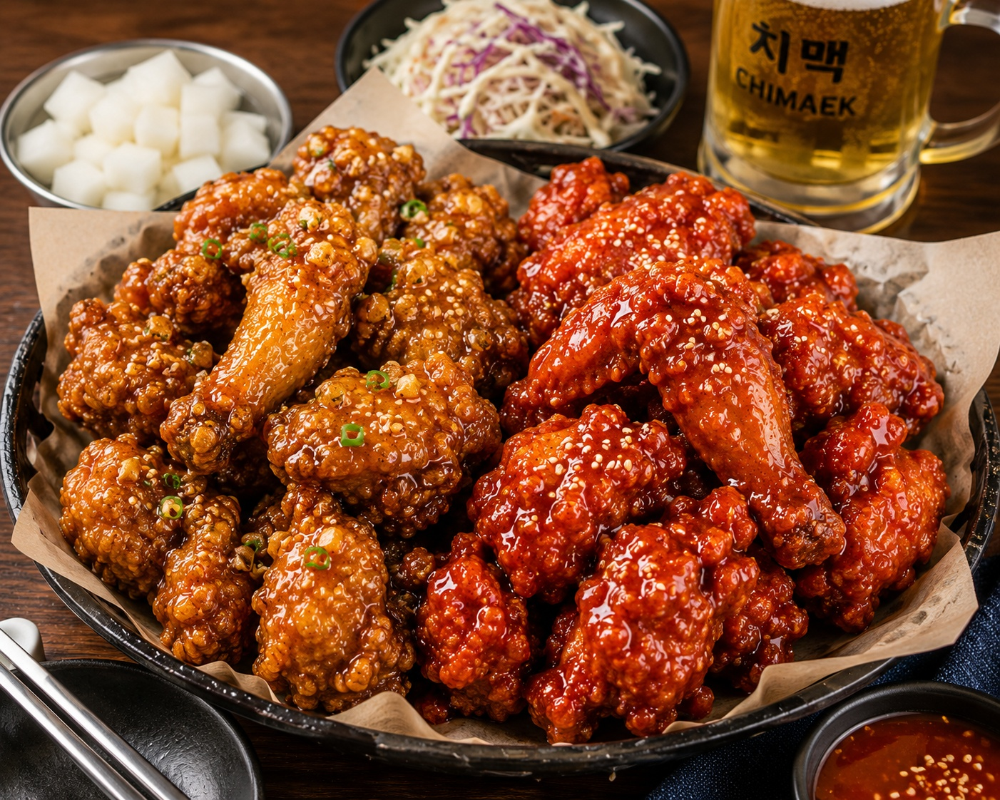
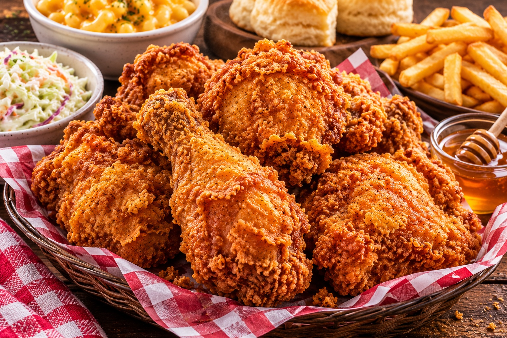

Japanese katsu chicken is a comforting and iconic dish that is loved for its massive size, neat sliced presentation, and satisfyingly loud crunch. Unlike other fried chickens that come in small nuggets or bone-in pieces, katsu is a whole, boneless chicken cutlet that is flattened out to create a large, impressive portion that fills up the entire plate. The standout feature of this chicken is its unique outer coat, which uses special Japanese panko breadcrumbs to create a remarkably light, airy, and spiky golden shell that never feels heavy or greasy. When you order it, the hot cutlet is sliced into thick, clean strips so you can easily see the contrast between the crispy golden crust and the juicy white meat inside. It is a very clean, beautiful dish that is traditionally served over a mountain of finely shredded raw cabbage with a side of white rice. To complete the meal, it is always drizzled with a thick, sweet, and tangy dark brown sauce that seeps into the crispy ridges, making every single bite a perfect balance of savory chicken, sweet sauce, and explosive crunch.


Japanese Karaage chicken is a very popular food that is famous for being incredibly crispy on the outside while staying super juicy and tender on the inside. To make it, chefs take small, bite-sized pieces of chicken thigh and mix them in a bowl with a simple marinade made of soy sauce, Japanese rice wine, fresh garlic, and grated ginger. The chicken sits in this mixture for a while so it can soak up all the savory, warm flavors right into the meat. Instead of using thick wheat flour or a heavy liquid batter like Western chicken, each piece is lightly rolled in a fine powder of potato starch or cornstarch. This special starch coating is the secret to karaage because it creates a very light, delicate, and pale golden crust that shatters perfectly when you take a bite. The chicken is usually fried twice in hot oil to make it extra crunchy and to lock in all the natural juices. It is traditionally served hot in a basket or on a plate with a fresh lemon wedge to squeeze over the top, a side of shredded raw cabbage, and a dollop of creamy, savory Japanese mayonnaise for dipping.
Indonesian fried chicken is called Ayam Goreng, and it is very different from Western fried chicken because it does not use any flour or heavy batter. Instead of hiding the chicken under a thick crust, people in Indonesia make it taste amazing by boiling the meat first in a pot filled with water and lots of fresh, natural spices like yellow turmeric, crushed garlic, juicy lemongrass, warm ginger, and coriander seeds. Boiling the chicken slowly like this makes the meat incredibly soft, juicy, and packed with flavour all the way down to the bone. After the chicken absorbs all those delicious juices and spices, it is taken out of the pot and dropped into a pan of very hot oil for just a few minutes. This quick frying turns the outside skin beautiful, golden, and crispy while keeping the inside perfectly tender. When you order it, it is almost always served hot with a big scoop of steaming white rice, crunchy raw cucumber slices, fresh cabbage, and a side of spicy chili paste called sambal so you can dip the meat and mix it with your rice. It is a very simple, comforting, and delicious meal that is loved by families all over Indonesia..


Korean fried chicken is famous all over the world for its super loud crunch and shiny, glowing look.Unlike heavy fast-food chicken, this style has a very thin, glass-like outer shell that stays incredibly crispy while keeping the meat underneath soft and extra juicy. It is usually served in big baskets piled high with wings or boneless bites that are coated in delicious, sticky sauces. The most popular choices are a sweet and mildly spicy red sauce, or a glossy soy-garlic sauce that covers every piece without making the skin soggy. It is a fun food meant for sharing with friends, and it always comes with a side of crunchy, sweet-and-sour pickled white radish cubes to refresh your tongue between bites.
Southern fried chicken is the ultimate comfort food, and it is all about that big, golden, super crunchy crust.Unlike other styles with smooth skins, this one has a thick, bumpy coating that flakes off into crispy pieces when you take a bite. The outside looks really rustic and uneven, but the meat underneath stays incredibly juicy and tender because it gets soaked in buttermilk first. It just looks so warm and cozy, whether it is piled high in a basket or served on a platter next to some fries or a drizzle of honey. It is a total classic that tastes exactly as satisfying as it looks.
